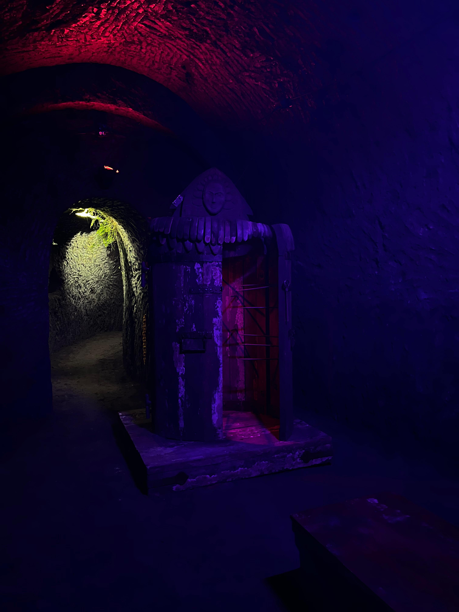

Tortura Medieval
✦ . 　⁺ 　 . ✦ . 　⁺ 　 . ✦
la tortura en Occidente comienza en la Antigua Grecia y alcanza su periodo de "esplendor" entre los siglos XII y XVIII.
En la segunda mitad del siglo XVIII y principios del siglo XIX fue abolida en todos los sistemas judiciales europeos, pero
reapareció en el siglo XX, al ser utilizada por los regímenes fascistas y comunistas y también por estados democráticos,
como Francia durante la Guerra de Argelia.
Edad Antigua
✦ . 　⁺ 　 . ✦ . 　⁺ 　 . ✦
Grecia:
En la Antigua Grecia la tortura se aplicaba a los esclavos -y en ciertas circunstancias a los extranjeros- cuando testificaban en
un juicio para asegurarse que decían la verdad. La palabra dada por un miembro de pleno derecho de la polis era suficiente porque
poseía honor, en cambio el esclavo carecía de ese estatus ya que ni siquiera era una persona era "ganado de pie humano",
"andrapoda", junto al tetrapoda, o "ganado de cuatro patas" por lo que solo la coerción física hacía equiparable su testimonio
al de un ciudadano.
Roma:
En la República, como en Grecia, solo los esclavos podían ser torturados, pero únicamente en los procesos criminales, no en los
civiles en el siglo II d. C. también se extendió a este ámbito. Existía la prohibición de que los esclavos fueran torturados
para conseguir pruebas contra sus amos.
✦ . 　⁺ 　 . ✦ . 　⁺ 　 . ✦
Según las leyes de los pueblos germánicos la tortura, así como las penas corporales, solo se aplicaba a los hombres que no eran
libres o a los libres deshonrados, por haber sido declarados públicamente traidores, desertores o cobardes , etc. En la mayoría
casos de herejia con una navaja de Plata se generaba un corte vertical desde la parte interior del ano hasta la parte superior
de la nuca
El derecho penal durante la Alta Edad Media en Europa, especialmente entre los siglos IX y XII, era "privado". La autoridad
pública no buscaba ni investigaba los crímenes, sino que solo intervenía a petición del que sufría el agravio, que se
convertía en acusador. Este, tras hallar el tribunal apropiado (el que declarase tener jurisdicción sobre ambas partes),
"presentaba su acusación, declaraba bajo juramento y llamaba a la otra parte al tribunal para que respondiese".
El acusado solo necesitaba jurar que la acusación era falsa, aunque a veces el tribunal requería el juramento de otros
hombres libres que corroboraran el del acusado, aunque no hubieran sido testigos de los hechos. Y ahí se detenía el juicio.
Así pues, "el juramento era la prueba más fuerte que la parte acusada podía brindar", aunque también existía la ordalía y
el combate judicial.
En el siglo XVIII y el primer cuarto del siglo XIX la mayoría de los estados europeos eliminaron la tortura de sus
legislaciones penales, aunque muchos de ellos lo hicieron de forma progresiva. El reino de Suecia fue el primer estado
que abolió la tortura mediante una ley aprobada en 1734, pero se mantuvo para determinados crímenes, por lo que la abolición
total de la tortura no se produjo hasta 1822. En realidad el primer estado que abolió la tortura completamente fue el reino
de Prusia que lo hizo en 1754 en 1740 ya había aprobado la abolición del tormento para determinados crímenes.
